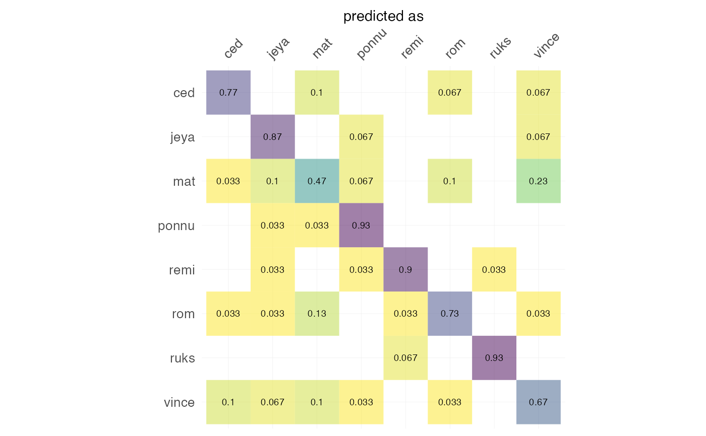
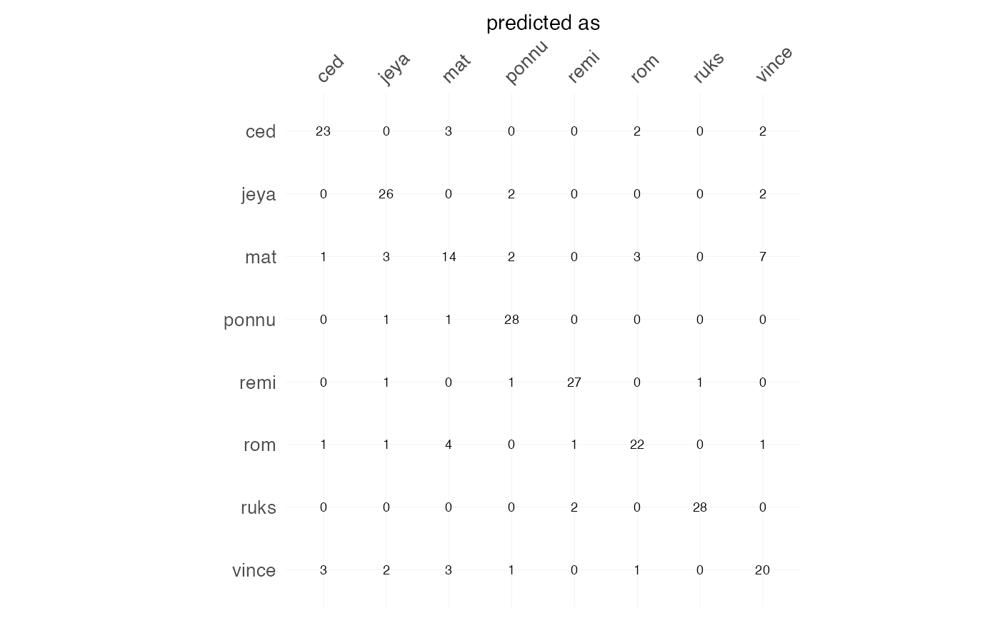

Either with frequencies (or percentages) plus marginal sums,
and values as heatmaps. Used in Momocs for plotting cross-validation tables
but may be used for any table (likely with freq=FALSE).
plot_CV( x, freq = FALSE, rm0 = FALSE, pc = FALSE, fill = TRUE, labels = TRUE, axis.size = 10, axis.x.angle = 45, cell.size = 2.5, signif = 2, ... ) # S3 method for default plot_CV( x, freq = FALSE, rm0 = FALSE, pc = FALSE, fill = TRUE, labels = TRUE, axis.size = 10, axis.x.angle = 45, cell.size = 2.5, signif = 2, ... ) # S3 method for LDA plot_CV( x, freq = TRUE, rm0 = TRUE, pc = TRUE, fill = TRUE, labels = TRUE, axis.size = 10, axis.x.angle = 45, cell.size = 2.5, signif = 2, ... )
Arguments
| x | a (cross-validation table) or an LDA object |
|---|---|
| freq | logical whether to display frequencies (within an actual class) or counts |
| rm0 | logical whether to remove zeros |
| pc | logical whether to multiply proportion by 100, ie display percentages |
| fill | logical whether to fill cell according to count/freq |
| labels | logical whether to add text labels on cells |
| axis.size | numeric to adjust axis labels |
| axis.x.angle | numeric to rotate x-axis labels |
| cell.size | numeric to adjust text labels on cells |
| signif | numeric to round frequencies using signif |
| ... | useless here |
Value
a ggplot object
See also
LDA, plot.LDA, and (pretty much the same) plot_table.
Examples
h <- hearts %>% fgProcrustes(0.01) %>% coo_slide(ldk=2) %T>% stack %>% efourier(6, norm=FALSE) %>% LDA(~aut) #> iteration: 1 gain: 30322 #> iteration: 2 gain: 1.2498 #> iteration: 3 gain: 0.34194 #> iteration: 4 gain: 0.0062954h %>% plot_CV() #> Warning: `guides(<scale> = FALSE)` is deprecated. Please use `guides(<scale> = "none")` instead.  h %>% plot_CV(freq=FALSE, rm0=FALSE, fill=FALSE)  # you can customize the returned gg with some ggplot2 functions h %>% plot_CV(labels=FALSE, fill=TRUE, axis.size=5) + ggplot2::ggtitle("A confusion matrix") #> Warning: `guides(<scale> = FALSE)` is deprecated. Please use `guides(<scale> = "none")` instead.
# or build your own using the prepared data_frame: df <- h %>% plot_CV() %$% data #> Warning: `guides(<scale> = FALSE)` is deprecated. Please use `guides(<scale> = "none")` instead. df #> # A tibble: 34 × 4 #> actual predicted n actual2 #> <fct> <fct> <dbl> <fct> #> 1 ced ced 0.77 ced #> 2 ced mat 0.1 ced #> 3 ced rom 0.067 ced #> 4 ced vince 0.067 ced #> 5 jeya jeya 0.87 jeya #> 6 jeya ponnu 0.067 jeya #> 7 jeya vince 0.067 jeya #> 8 mat ced 0.033 mat #> 9 mat jeya 0.1 mat #> 10 mat mat 0.47 mat #> # … with 24 more rows # you can even use it as a cross-table plotter bot$fac %>% table %>% plot_CV() #> Warning: `guides(<scale> = FALSE)` is deprecated. Please use `guides(<scale> = "none")` instead.